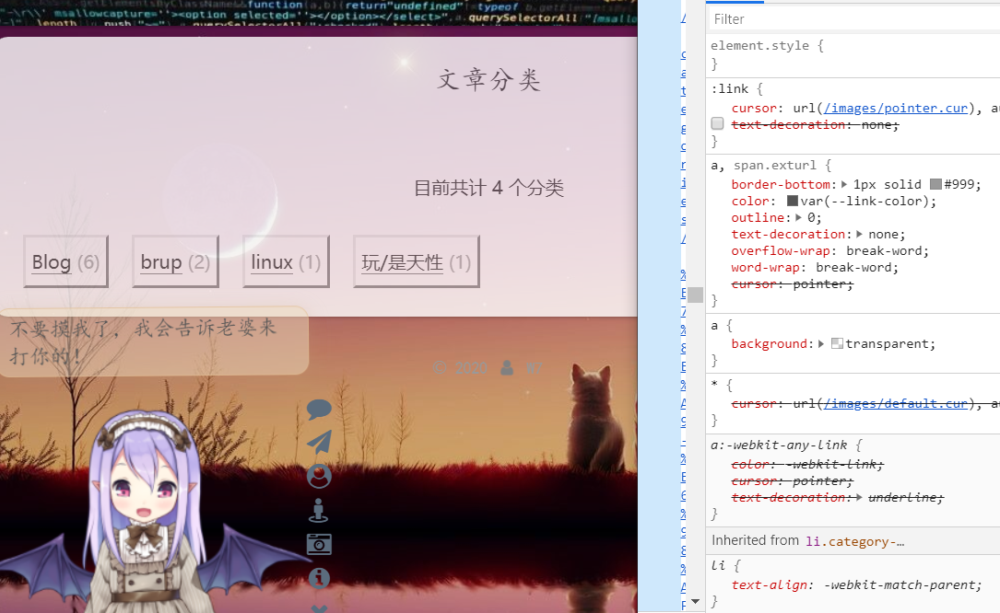

配置优化这东西是真的浪费时间，要不是我懒就该换个博客了
hexo init /xxx
1 | $ hexo init D:/521/NEW |
调试： hexo s --debug
还是继续用next
1 | git clone https://github.com/theme-next/hexo-theme-next themes/next |
为什么挂代理还是这么慢……
没下载完先改一下# Hexo Configuration基本信息
ctrl+c/ctrl+v,主题换成next再习惯性的删了原主题
把next切换到Gemini
菜单栏：
menu打开用到那几个，顺便加上友链friendlink: /friendlink/ || link
1 | hexo new page "schedule" |
友链
要增加友链页面的样式的没弄好，还是以后再改吧
修改回到顶部
back2top:
enable: true
# Back to top in sidebar.
sidebar: true
# Scroll percent label in b2t button.
scrollpercent: true社交链接
# Social Links
# Usage: `Key: permalink || icon`
# Key is the link label showing to end users.
.......头像
avatar:
# Replace the default image and set the url here.
.......然后把图片扔进去
圆角
hexo的source添加_data/next.yml
添加圆角设置并在next配置取消variables.styl注释
// 圆角设置
$border-radius-inner = 20px 20px 20px 20px;
$border-radius = 20px;原来的 next/source/css/_custom/_custom.styl 可以放在 hexo/source/_data/styles.styl
半透明
在hexo/source/_data/styles.styl添加
1 | //博客内容透明化 |
背景图
先把图片放进去
在hexo/source/_data/styles.styl添加
1 | body { |
还是加上分类吧，
1 | hexo new page categories |
改一下md
1 | --- |
用的时候和tag应该是一样的
添加搜索
NexT 主题用Hexo的拓展包 hexo-generator-searchdb，预先生成了一个文本库 search.xml，然后传到了网站里面。在本地搜索的时候，NexT 直接用 javascript 调用了这个文件，从而实现了静态网站的本地搜索。~安装插件
1 | npm install hexo-generator-searchdb --save |
好了,显示+ hexo-generator-searchdb@1.2.0
到next主配置打开search>发现可以搜索了
文末提醒
在\themes\next\layout\_macro中新建passage-end-tag.swig文件,复制下列代码：
1 | <div> |
打开\themes\next\layout\_macro\post.swig，在post-body之后，post-footer之前添加:
1 | <div> |
打开主题配置文件在末尾添加“本文结束”标记：
1 | passage_end_tag: |
鼠标点击效果
** 爆炸效果**next/source/js中新建firework.js，并将粘贴代码
1 | "use strict";function updateCoords(e){pointerX=(e.clientX||e.touches[0].clientX)-canvasEl.getBoundingClientRect().left,pointerY=e.clientY||e.touches[0].clientY-canvasEl.getBoundingClientRect().top}function setParticuleDirection(e){var t=anime.random(0,360)*Math.PI/180,a=anime.random(50,180),n=[-1,1][anime.random(0,1)]*a;return{x:e.x+n*Math.cos(t),y:e.y+n*Math.sin(t)}}function createParticule(e,t){var a={};return a.x=e,a.y=t,a.color=colors[anime.random(0,colors.length-1)],a.radius=anime.random(16,32),a.endPos=setParticuleDirection(a),a.draw=function(){ctx.beginPath(),ctx.arc(a.x,a.y,a.radius,0,2*Math.PI,!0),ctx.fillStyle=a.color,ctx.fill()},a}function createCircle(e,t){var a={};return a.x=e,a.y=t,a.color="#F00",a.radius=0.1,a.alpha=0.5,a.lineWidth=6,a.draw=function(){ctx.globalAlpha=a.alpha,ctx.beginPath(),ctx.arc(a.x,a.y,a.radius,0,2*Math.PI,!0),ctx.lineWidth=a.lineWidth,ctx.strokeStyle=a.color,ctx.stroke(),ctx.globalAlpha=1},a}function renderParticule(e){for(var t=0;t<e.animatables.length;t++){e.animatables[t].target.draw()}}function animateParticules(e,t){for(var a=createCircle(e,t),n=[],i=0;i<numberOfParticules;i++){n.push(createParticule(e,t))}anime.timeline().add({targets:n,x:function(e){return e.endPos.x},y:function(e){return e.endPos.y},radius:0.1,duration:anime.random(1200,1800),easing:"easeOutExpo",update:renderParticule}).add({targets:a,radius:anime.random(80,160),lineWidth:0,alpha:{value:0,easing:"linear",duration:anime.random(600,800)},duration:anime.random(1200,1800),easing:"easeOutExpo",update:renderParticule,offset:0})}function debounce(e,t){var a;return function(){var n=this,i=arguments;clearTimeout(a),a=setTimeout(function(){e.apply(n,i)},t)}}var canvasEl=document.querySelector(".fireworks");if(canvasEl){var ctx=canvasEl.getContext("2d"),numberOfParticules=30,pointerX=0,pointerY=0,tap="mousedown",colors=["#FF1461","#18FF92","#5A87FF","#FBF38C"],setCanvasSize=debounce(function(){canvasEl.width=2*window.innerWidth,canvasEl.height=2*window.innerHeight,canvasEl.style.width=window.innerWidth+"px",canvasEl.style.height=window.innerHeight+"px",canvasEl.getContext("2d").scale(2,2)},500),render=anime({duration:1/0,update:function(){ctx.clearRect(0,0,canvasEl.width,canvasEl.height)}});document.addEventListener(tap,function(e){"sidebar"!==e.target.id&&"toggle-sidebar"!==e.target.id&&"A"!==e.target.nodeName&&"IMG"!==e.target.nodeName&&(render.play(),updateCoords(e),animateParticules(pointerX,pointerY))},!1),setCanvasSize(),window.addEventListener("resize",setCanvasSize,!1)}"use strict";function updateCoords(e){pointerX=(e.clientX||e.touches[0].clientX)-canvasEl.getBoundingClientRect().left,pointerY=e.clientY||e.touches[0].clientY-canvasEl.getBoundingClientRect().top}function setParticuleDirection(e){var t=anime.random(0,360)*Math.PI/180,a=anime.random(50,180),n=[-1,1][anime.random(0,1)]*a;return{x:e.x+n*Math.cos(t),y:e.y+n*Math.sin(t)}}function createParticule(e,t){var a={};return a.x=e,a.y=t,a.color=colors[anime.random(0,colors.length-1)],a.radius=anime.random(16,32),a.endPos=setParticuleDirection(a),a.draw=function(){ctx.beginPath(),ctx.arc(a.x,a.y,a.radius,0,2*Math.PI,!0),ctx.fillStyle=a.color,ctx.fill()},a}function createCircle(e,t){var a={};return a.x=e,a.y=t,a.color="#F00",a.radius=0.1,a.alpha=0.5,a.lineWidth=6,a.draw=function(){ctx.globalAlpha=a.alpha,ctx.beginPath(),ctx.arc(a.x,a.y,a.radius,0,2*Math.PI,!0),ctx.lineWidth=a.lineWidth,ctx.strokeStyle=a.color,ctx.stroke(),ctx.globalAlpha=1},a}function renderParticule(e){for(var t=0;t<e.animatables.length;t++){e.animatables[t].target.draw()}}function animateParticules(e,t){for(var a=createCircle(e,t),n=[],i=0;i<numberOfParticules;i++){n.push(createParticule(e,t))}anime.timeline().add({targets:n,x:function(e){return e.endPos.x},y:function(e){return e.endPos.y},radius:0.1,duration:anime.random(1200,1800),easing:"easeOutExpo",update:renderParticule}).add({targets:a,radius:anime.random(80,160),lineWidth:0,alpha:{value:0,easing:"linear",duration:anime.random(600,800)},duration:anime.random(1200,1800),easing:"easeOutExpo",update:renderParticule,offset:0})}function debounce(e,t){var a;return function(){var n=this,i=arguments;clearTimeout(a),a=setTimeout(function(){e.apply(n,i)},t)}}var canvasEl=document.querySelector(".fireworks");if(canvasEl){var ctx=canvasEl.getContext("2d"),numberOfParticules=30,pointerX=0,pointerY=0,tap="mousedown",colors=["#FF1461","#18FF92","#5A87FF","#FBF38C"],setCanvasSize=debounce(function(){canvasEl.width=2*window.innerWidth,canvasEl.height=2*window.innerHeight,canvasEl.style.width=window.innerWidth+"px",canvasEl.style.height=window.innerHeight+"px",canvasEl.getContext("2d").scale(2,2)},500),render=anime({duration:1/0,update:function(){ctx.clearRect(0,0,canvasEl.width,canvasEl.height)}});document.addEventListener(tap,function(e){"sidebar"!==e.target.id&&"toggle-sidebar"!==e.target.id&&"A"!==e.target.nodeName&&"IMG"!==e.target.nodeName&&(render.play(),updateCoords(e),animateParticules(pointerX,pointerY))},!1),setCanvasSize(),window.addEventListener("resize",setCanvasSize,!1)}; |
打开./themes/next/layout/_layout.swig 并在 <head> 中间添加以下代码
1 | <!-- 爆炸效果 --> |
打开./themes/next路径下的_config.yml文件并在末尾添加以下代码
1 | # Fireworks |
这爆炸······怎么波浪总是延迟，
** 爱心 **
在next/source/js中新建clicklove.js，并将粘贴下列代码
1 | !function(e,t,a){function n(){c(".heart{width: 10px;height: 10px;position: fixed;background: #f00;transform: rotate(45deg);-webkit-transform: rotate(45deg);-moz-transform: rotate(45deg);}.heart:after,.heart:before{content: '';width: inherit;height: inherit;background: inherit;border-radius: 50%;-webkit-border-radius: 50%;-moz-border-radius: 50%;position: fixed;}.heart:after{top: -5px;}.heart:before{left: -5px;}"),o(),r()}function r(){for(var e=0;e<d.length;e++)d[e].alpha<=0?(t.body.removeChild(d[e].el),d.splice(e,1)):(d[e].y--,d[e].scale+=.004,d[e].alpha-=.013,d[e].el.style.cssText="left:"+d[e].x+"px;top:"+d[e].y+"px;opacity:"+d[e].alpha+";transform:scale("+d[e].scale+","+d[e].scale+") rotate(45deg);background:"+d[e].color+";z-index:99999");requestAnimationFrame(r)}function o(){var t="function"==typeof e.onclick&&e.onclick;e.onclick=function(e){t&&t(),i(e)}}function i(e){var a=t.createElement("div");a.className="heart",d.push({el:a,x:e.clientX-5,y:e.clientY-5,scale:1,alpha:1,color:s()}),t.body.appendChild(a)}function c(e){var a=t.createElement("style");a.type="text/css";try{a.appendChild(t.createTextNode(e))}catch(t){a.styleSheet.cssText=e}t.getElementsByTagName("head")[0].appendChild(a)}function s(){return"rgb("+~~(255*Math.random())+","+~~(255*Math.random())+","+~~(255*Math.random())+")"}var d=[];e.requestAnimationFrame=function(){return e.requestAnimationFrame||e.webkitRequestAnimationFrame||e.mozRequestAnimationFrame||e.oRequestAnimationFrame||e.msRequestAnimationFrame||function(e){setTimeout(e,1e3/60)}}(),n()}(window,document); |
打开/next/layout/_layout.swig并在末尾添加以下代码
1 | <!-- 页面点击心形 --> |
代码框复制按钮
next主题配置找到打开
找到codeblock:
加载条
切换到Next主题文件夹
安装模块到source/lib文件夹
1 | git clone https://github.com/theme-next/theme-next-pace source/lib/pace |
打开Next主题路径下的配置文件_config.yml，搜索pace定位找到>
1 | # Progress bar in the top during page loading. |
加了看板娘总是跳出加载条，又还是禁用了
鼠标
在/themes/next/source/css/main.styl 添加样式：
1 | /* 鼠标样式 */ |
用到的光标文件：default.cur、pointer.cur 放在 images 目录下，.cur是静态光标文件，
标签页
在 /themes/next/layout/ 目录下，新增 tag-color.swig 文件
1 | <script type="text/javascript"> |
在同级目录的 page.swig 中引入 tag-color.swig
1 | <div class="tag-cloud"> |
readmore
手动截断，
1 | <!-- more --> |
2D看板娘
用过官方那什么什么的忘了一下载就是shizuku，
后来发现还有可以换装更好玩的>>>
感谢张书樵大神的Live2D项目
把项目文件解压到Hexo/source/live2d-widget/没有live2d-widget要手动创建
要自定义看板娘初始加载模型或者互动话语的话，改live2d-widget/autoload.js>
1 | // const live2d_path = "https://cdn.jsdelivr.net/gh/stevenjoezhang/live2d-widget/"; |
在Hexo根目录/themes/next/layout/_layout.swing中，</body> 之前增加
1 | <script src="/live2d-widget/autoload.js"></script> |
在 </head>之前增加
1 | <link rel="stylesheet" href="https://cdn.jsdelivr.net/npm/font-awesome/css/font-awesome.min.css"> |
在主题配置文件中新增
1 | live2d: |
自定义看板娘大小、位置或者其他样式，修改waifu.css
自定义看板娘言语互动，修改waifu-tips.js和waifu-tips.json
怎么自定义，懒得看了······
时钟
代码，导入，标注主配置文件
分类页
感觉还是要改一下，打开浏览器f12可以边改边看效果，虽然还是没改好，a标签下面那条横线没去掉 最后把css样式复制到style保存就行了。

底部爱心
\themes\next\layout\_partials\footer.swig文件，修改：
1 | <span class="with-love" id="animate" style="font-size: 13px"> |
然后再打开\themes\next\source\css\_common\outline\footer\footer.styl改成
1 | if hexo-config('footer.icon.animated') { |
插件 地址直通车
主题开发
1 | $ hexo init D:/521/Byself |